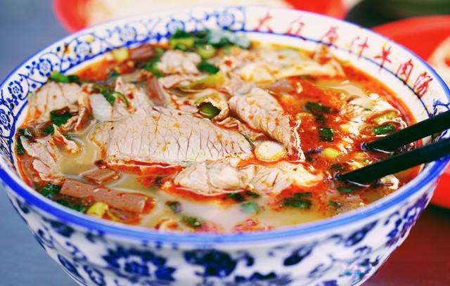

🍜 Famous Delicious Foods
Luoyang has a rich culinary tradition with many famous dishes. Don't miss these local specialties:
Luoyang Water Banquet

The most famous local cuisine! A traditional banquet with 24 dishes served in a specific order, mostly soup-based dishes. It dates back over 1,000 years and was once served to emperors.
Other Must-Try Foods:
- Beef Soup - Famous Luoyang-style beef soup served with flatbread. Perfect for breakfast! 
🥢 Food Tip: Visit the Old Town area to find authentic restaurants serving traditional Luoyang dishes!